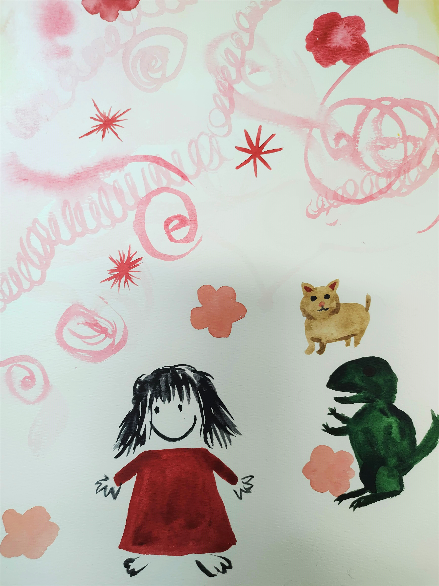

RYGTEN FOR DET HVIDE PAPIR
Når du først starter, kan det være intimiderende at bryde isen, bryde stilheden af den blanke side. Overvind frygten med nogle alternative løsninger! Det værste trin kan oftest være det at få begyndt, det at få sat blyant til papir.
ALLE KAN OPLEVE BLOKADE
I programmet Kunsterkolonien sæson 2 møder man bl.a. Michael Kvium, et navn de fleste kender, som for første gang i sin 40-årige karriere oplever ikke at kunne skabe noget. Som han bliver introduceret, siger han ”Hvorfor tog jeg så med til Bornholm? Det gjorde jeg nok, fordi der altid er en udfordring i at gøre det, som man sagde man aldrig ville gøre”. Han er stresset, rastløs og bliver endda dårlig, når han træder ind i sit studie. I programmet søger han ny inspiration og rykker ud af studiet for at genfinde gnisten.
” Det hvide lærred, det er jo et mareridt for de fleste kunstnere” Ursula Reuter Christiansen.

HVAD STOPPER DIG?
Flere og flere kunstnere er selvlærte nu, hvilket betyder at al læring står på vores egne skuldre. Disciplin er vigtigere end nogensinde. Men hvad gør man når man sidder fast eller ikke kan komme i gang? Eller i sidste ende ikke kan lide ens resultat? Perfektionisme og forventninger er skyhøje jo mere du bliver vant til at lave kunst.

EN ØVELSE I AT LEGE MED KUNSTEN IGEN
Noget vi tit glemmer, er at da vi først startede med farver og blyanter, da var vi børn, og det handlede om at have det sjovt. Forventninger og perfektionisme var ingen steder at finde, den situation skal vi prøve at gendanne. Prøv at følge med hvis du tør.
Tegn eller mal hvad du gjorde som barn, yndlings tegneseriefigurer, dyr, superhelte, hvad som helst.
Næste trin er at tage et medie der er ugennemsigtigt og begynde at tegne over dine børnetegninger.
Uigennemsigtige medier kan være oliemaling, akrylmaling, akryl tuscher, oliekridt, pastelkridt, gouache eller bare en sort tusch hvis du vil holde det simpelt.